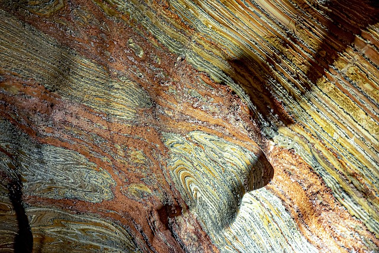
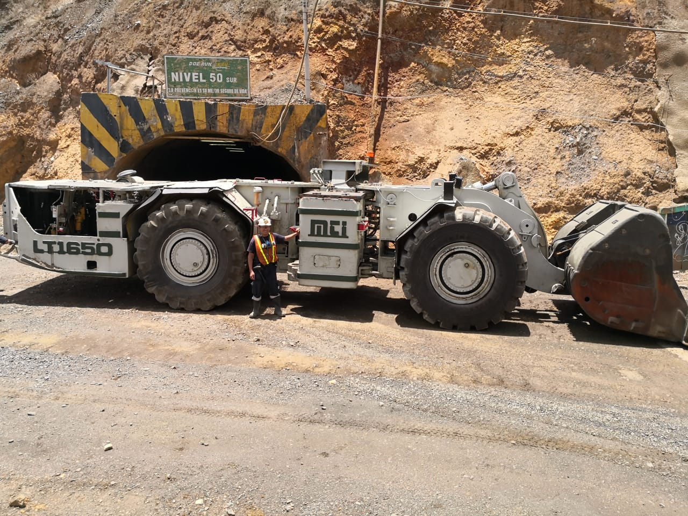
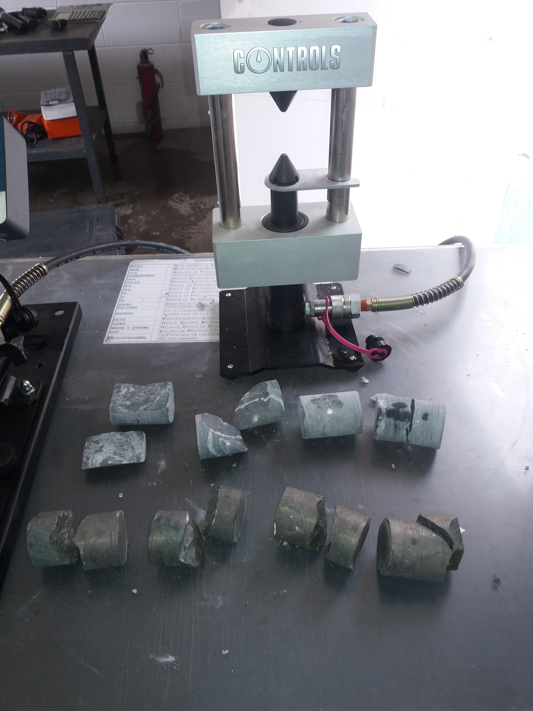
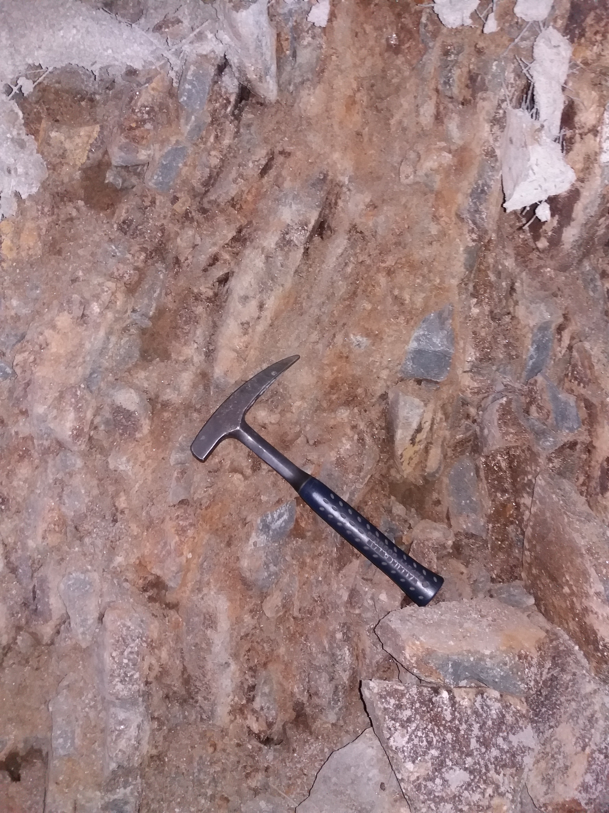
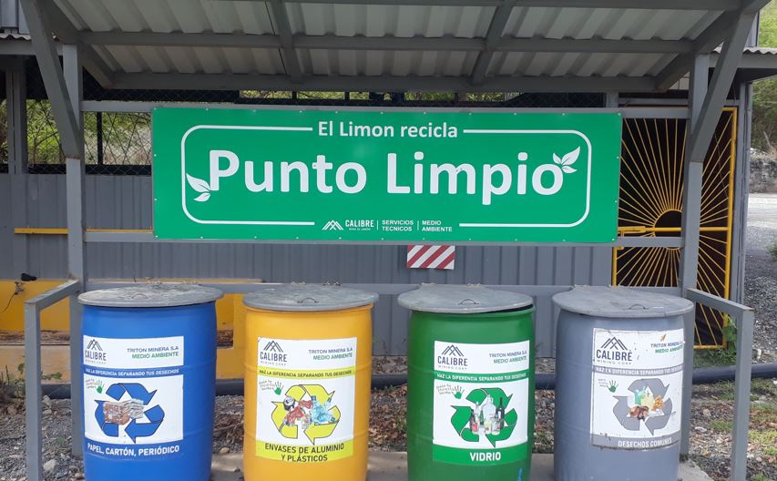
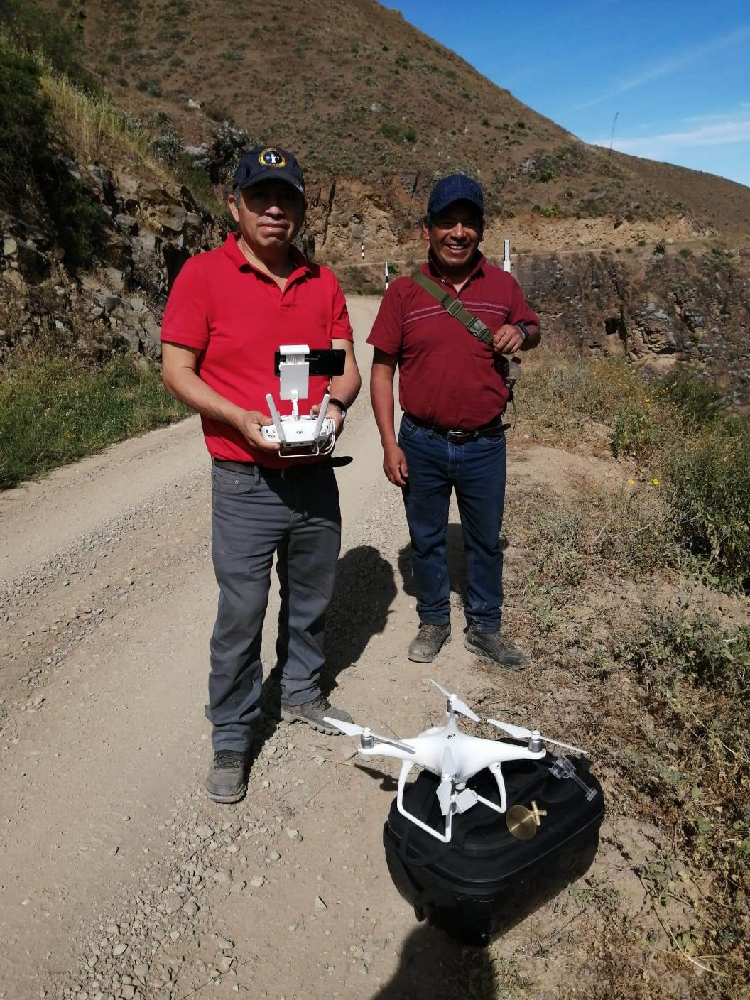
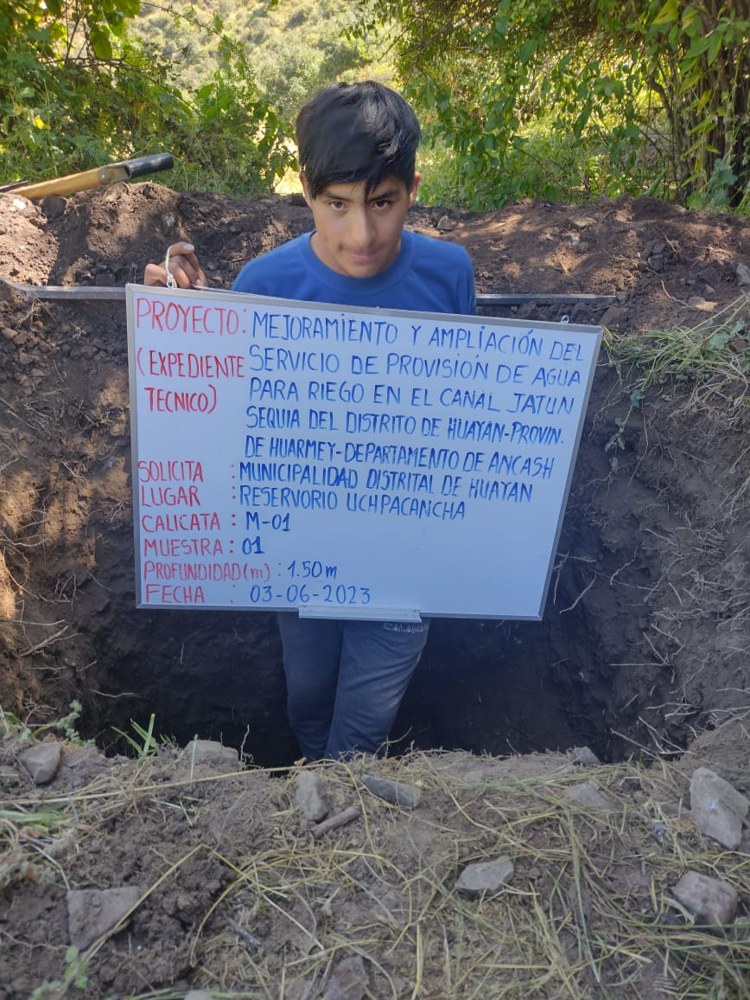

SERVICIOS
Dominamos las 5 ramas de la ingenieria en construcción

INGENIERÍA GEOLÓGICA
- Exploración de mineral in situ
- Geoquímica de exploración
- Analisis estructural de campo
- Muestreo, analisis QA/QC en exploración y explotación de minas
- Capacitación en seguridad en exploraciones
- Auditoria y evaluación de proyectos en exploración y explotación de minas

P&E Constructores S.A.C.
INGENIERÍA DE MINAS
- Revisión, formulación y evaluación de proyectos mineros
- Elaboración de expedientes técnicos para inicio y reinicio de operaciones mineras
- Diseño y planificación de métodos de minado
- Estudios de ventilación de minas
- Elaboración del plan de minado anual
- Elaboración del plan y programa de SSOMAC
- Topografía minera
- Elaboración de expedientes para solicitud de explosivos para mineria

P&E Constructores S.A.C.
INGENIERÍA DE GEOTÉCNICA
- Elaboración de GCMP (Ground Control Management Plan)
- Mapeo y logueo geomecánico
- Monitoreo de daños por voladura, sísmica, deformación de pilares costilla, corona
- Laboratorio de mecánica de rocas y suelos.
- Estudios geomecánicos de método de explotación, relleno de mina, sostenimiento, evaluación In rush, evaluación de peligro sísmico, subsidencia, hundimiento, modelamiento numérico, etc.
- Cursos de capacitación y entrenamiento geomecánica en fortificación, monitoreo e instrumentación y control de calidad de los sistemas de sostenimiento


P&E Constructores S.A.C.
INGENIERÍA AMBIENTAL
- Estudios de instrumentos de gestion ambiental IGAFOM, DIA, EIA
- Plan de cierre de minas
- Monitoreos ambientales: de aire, agua, suelos, ruido
- Elaboración de solicitud de calificación PPM-PMA
- Auditorias en gestión ambiental ISO 14001
- Elaboración de objetivos y metas en gestión ambiental
- Servicio de saneamiento ambiental

P&E Constructores S.A.C.
INGENIERÍA CIVIL Y ESTRUCTURAL
- Elaboración de expedientes técnicos para obras publicas y privadas
- Elaboración de planos
- Tramite de licencia de construcción
- Tramite licencia de funcionamiento municipal
- Supervisión de obras civiles
- Ejecución de obras como: Carreteras, Canales, Puentes, Edificaciones
- Topografía
- Instalaciones sanitarias
- Instalaciones eléctricas
- Acabado de interiores y exteriores
- Servicio de saneamiento ambiental
- Venta de materiales, herramientas y equipos para construcción
- Venta de extintores y equipos contra incendios


P&E Constructores S.A.C.